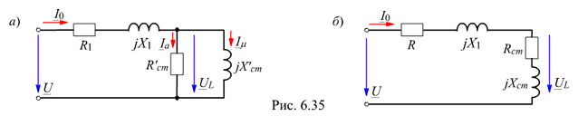
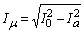
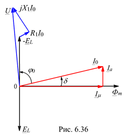
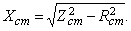
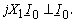
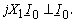

6.4.3.1. Схема замещения катушки со сталью
Максимальное значение магнитной индукции Вm в электромагнитных устройствах редко превышает 1,2…1,45 Тл и насыщение магнитной системы в них незначительное. При этом заменяют в действительности несинусоидальный ток эквивалентным синусоидальным током i0, опережающим по фазе магнитный поток Ф на угол d (см. рис. 6.33), и разлагают его на две составляющие: намагничивающую im, совпадающую по фазе с магнитным потоком Ф, и активную ia, совпадающую по фазе с напряжением uL. Это позволяет вести расчёт цепи комплексным методом.

В схему замещения катушки со сталью (рис. 6.35, а) обычно включают: резистивное сопротивление R1 обмотки w, индуктивное сопротивление рассеяния jX1 = EP / I0, обусловленное потоком рассеяния ФP; активный элемент (по которому протекает ток Ia » DPст / UL) с сопротивлением R'ст, соответствующий потерям в стали, и индуктивный элемент (по которому протекает намагничивающий ток Im) с сопротивлением X'ст, обусловленный основным магнитным потоком Ф. Последние два элемента включают между собой параллельно (рис. 6.35, а) или последовательно (рис. 6.35, б). Они образуют т. н. цепь (ветвь) намагничивания, параметры которой определяют из выражений (для схемы рис. 6.35, а):
I0 = Ia+Im ; U = I0(R1 + jX1) +UL = I0(R1 + jX1) - EL, где UL = - EL
; X'ст = UL / Im ; R'ст = UL / Ia = EL / Ia.
Параметры Rст и jXст ветви намагничивания для схемы (рис. 6.35, б) могут быть определены путем перерасчёта параметров R'ст и jX'ст схемы рис. 6.35, а или по соотношениям:

Rст = DPст / I02; Zст = UL / I0;
Векторная диаграмма (ВД) для схемы рис. 6.35, а представлена на рис. 6.36.
Угол d между вектором тока I0 и вектором основного магнитного потока  называют углом магнитных потерь. При этом ток Ia » 0,1I0. Вектоp R1I0 || I0, а вектор
 Векторная диаграмма для схемы рис. 6.35, б принципиально не отличается от построенной ВД.
называют углом магнитных потерь. При этом ток Ia » 0,1I0. Вектоp R1I0 || I0, а вектор
 Векторная диаграмма для схемы рис. 6.35, б принципиально не отличается от построенной ВД.
Для схемы рис. 6.35, б напряжение
U = Z1I0 + UL = I0(R1 + jX1) - EL,
а вектор тока I0 отстает по фазе от вектора U на угол j0 < 90°. Обычно напряжения R1I0 и jX1I0 составляют 3…8% от напряжения U, поэтому в первом приближении можно считать, что напряжение
UL = - EL = U - R1I0 - jX1I0 » U.
Ток I0 и его составляющие Ia и Im находят опытным или аналитическим путём, а также с помощью графических построений.